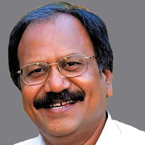

In 1954, Hero Cycles moved up
the value chain by making a shift from supplying to manufacturing handlebars,
front forks and chains. In 1956, the Punjab Government issued tender notices for
twelve new industrial licenses to make bicycles in Ludhiana. Munjal and his
brothers participated in the bid and won the contract. Hero Cycles was
registered as a large-scale industrial unit. with capital partly financed by the
Government of Punjab.
In 1961, Rockman Cycles
Industries was established to manufacture bicycle chains and hubs. Under
Munjal's leadership, Hero Cycles was the first company to export bicycles on
such a large scale. In 1975, the company had become the largest bicycle
manufacturer in India. By 1986, Hero Cycles entered the Guinness Book of Records
as the largest manufacturers of bicycles in the world.
Before entering into a joint
venture with Honda Motors, Munjal started Majestic Auto and started
manufacturing the Hero Majestic Moped. To manufacture motor cycles in 1984, the
Hero Group started a joint venture with Hero Honda and established a plant at
Dharuhera, Haryana. The Hero Group became so large that by 2002 it had sold 8.6
million bicycles, and was producing 16,000 motorcycles a day.
After the Hero Honda Motors
joint venture broke up in August 2011, Hero's board of directors agreed to pay
royalties to Honda to continue to produce the Hero Honda until 2013,due to the
popularity and ubiquity of the Hero Honda brand in the Asia Pacific region.
The separation gave an
opportunity for Hero to expand its market globally with the name Hero MotoCorp.
Previously, it had not been permitted for Hero Honda to sell their bikes outside
the Asia Pacific and in countries where Honda operated.
In the first week of August
2013, the company recorded a benchmark never before reached by an Indian
two-wheel vehicle industry manufacturer, by producing 50 million bikes.
Brijmohan was married to
Santosh and had five children: Raman Kant (deceased), Suman Kant, Pawan Kant,
ssoothuSunil Kant and a daughter, Geeta Anand.He died on 1 November 2015 in
South Delhi after a short illness.
Awarded Businessman of the
Year in 1994 by business magazine Business India
Received the National Award
for outstanding contribution to the Development of Indian Small Scale Industry
in 1995
In 1999 Featured in Most
Admired CEO List of the magazine Business Barons
Received the Distinguished
Entrepreneurship Award from the PHD Chamber of Commerce and Industry in 1997.
Xavier Labour Relations
Institute (XLRI) conferred Sir Jehangir Ghandy Medal for Industrial Peace in
2000
Featured as Ernst & Young
Entrepreneur of the year in 2001
Received the Lifetime
Achievement award for Management from the All India Management Association in
2003
Banaras Hindu University,
Varanasi conferred him with a doctorate; degree of Doctors of Letters honoris
causa in October 2004.
Awarded the Padma Bhushan in
March 2005 for his contribution to trade and industry in 2005
Lakshya Business Visionary
Award by NITIE, Mumbai in 2008
Lifetime Achievement Award
by TERI in 2011
Lifetime Achievement Award
by Ernst & Young in 2011.
Lifetime Contribution Award
by All India Management Association in 2011
Doctor of Science (Honoris Causa) by IIT, Kharagpur in 2011